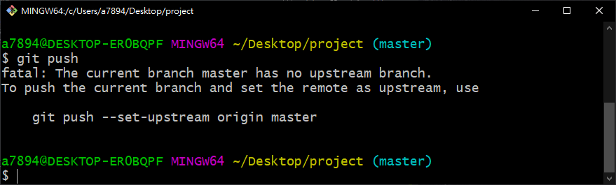

常用指令
-
git init建立新的本地端 Repository。
-
git clone [Repository URL]複製遠端的 Repository 檔案到本地端。
-
git status檢查本地端檔案異動狀態。
-
git add [檔案或資料夾]將指定的檔案（或資料夾）加入版本控制。用
git add .可加入全部。 -
git commit提交（commit）目前的異動。
-
git commit -m "提交說明內容"提交（commit）目前的異動並透過
-m參數設定摘要說明文字。 -
git stash獲取目前工作目錄的 dirty state，並保存到一個未完成變更的 stack，以方便隨時回復至當初的 state。
-
git log查看先前的 commit 記錄。
-
git push將本地端 Repository 的 commit 發佈到遠端。
-
git push origin [BRANCH_NAME]發佈至遠端指定的分支（Branch）
-
git branch查看分支。
-
git branch [BRANCH_NAME]建立分支。
-
git checkout [BRANCH_NAME]取出指定的分支。
-
git checkout -b [BRANCH_NAME]建立並跳到該分支。
-
git branch -D [BRANCH_NAME]強制刪除指定分支（須先切換至其他分支再做刪除）。
-
git reset --hard [HASH]強制恢復到指定的 commit（透過 Hash 值）。
-
git checkout [HASH]切換到指定的 commit（與
git checkout [BRANCH_NAME]相同)。 -
git branch -m <OLD_BRANCH_NAME> <NEW_BRANCH_NAME>修改分支名稱。
Git 指令表
config
| Git | zsh | do | Remark |
|---|---|---|---|
git config --list | 查看設定 | ||
git config --local user.name "(userName)" | 設定帳號 | ||
git config --local user.email "(e-mail)" | 設定E-mail | 全域 | |
git config --global user.name "(userName)" | 設定帳號 | 單專案 | |
git config --global user.email "(e-mail)" | 設定E-mail | 單專案 |
init / clone
| Git | zsh | do | Remark |
|---|---|---|---|
git clone | 抓遠端儲存庫下來 | ||
git init | Git 初始化 | ||
rm -rf .git | 移除 Git |
remote
| Git | zsh | do | Remark |
|---|---|---|---|
git remote add (origin) (git@~.git) | 遠端連結 | ||
git remote set-url (origin) (git@~.git) | - | 修改遠端連結 | |
git remote remove (origin) | - | 移除遠端連結 | |
git remote -v | 查詢遠端連結(URL) | ||
git push -u (origin) (master) | 推上遠端並綁定 |
基本版更（ pull / push / add / commit / status）
| Git | zsh | do | Remark |
|---|---|---|---|
git status | gst | ||
git add (file) | ga (~) | ||
git add . | ga . | ||
git commit -m'message' | gcmsg '(~)' | ||
git pull | gl | ||
git push (remote) (branch) | gp ( | ||
git push -u (remote) (branch) | |||
git restore --staged (file) | 取消 git add | ||
git pull --rebase (remote) (branch) | gl |
檔案變更版更操作
| Git | zsh | do | Remark |
|---|---|---|---|
git clean -fd | - | 清除未被追蹤的所有檔案 | 已編輯的會恢復,新增的不會變動 |
git checkout (file) | - | 當前目錄回復前次存檔 | (已編輯的會恢復,新增的不會變動) |
git restore (file) | - | 當前目錄回復前次存檔 | (含被刪除的檔) |
Branch 分支應用
| Git | zsh | do | Remark |
|---|---|---|---|
git branch | - | 查詢所有本地分支 | |
git branch -a | - | 查詢所有遠端分支 | |
git branch (newBranch) | - | 當前 commit 新建分支 | |
git branch (newBranch) (commitID) | - | 特定 commit 上新建分支 | |
git checkout (branch) | - | 切換到某分支 | |
git checkout -b (newBranch) | - | 新建分支並切換過去 | |
git branch -d (branch) | - | 刪除某分支 | |
git branch -D (branch) | - | 強制刪除某分支 | |
git branch -m (branch) (newName) | - | 將某 branch 更名 | 必須先切到不同分支 |
Reset 切到某版本
| Git | zsh | do | Remark |
|---|---|---|---|
git reset (commit) | 預設為'mixed' | ||
git reset (commit) --mixed | 放回"1-工作目錄" | ||
git reset (commit) --soft | 放回"2-暫存區" | ||
git reset (commit) --hard | 都不留(直接被隱藏) | ||
git reset (commit)^ | 退回前1次的commit | ^^ 退回前2版… | |
git reset (commit)~5 | 退回前5次的commit | ~N 退至前N版 |
- (commit)可以是 branch / commit ID / HEAD
Rebase & Merge 合併應用
| Git | zsh | do | Remark |
|---|---|---|---|
git rebase (branch) | 重接分支基底 | ||
git merge (branch) | 合併分支(平行) |
查詢
| Git | zsh | do | Remark |
|---|---|---|---|
git config --list | 查詢目前設定 | ||
which git | 查詢 Git 位置 | ||
git --version | 查詢Git版本 | ||
git status | 查詢狀態 | ||
git log | 查詢 Log | ||
git log --oneline | 查詢 Log(單行顯示) | ||
git log --oneline --all --graph | 樹狀顯示 Log | ||
git log -p FileName | 查詢檔案 Log | ||
git blame FileName | 查詢該檔案每行編輯資訊 | (上傳者&時間) | |
git reflog | 查詢 reflog | ||
git help | 查詢指令 |
- reflog：reflog 保留HEAD移動的軌跡，可以查詢到commit ID(用於尋找被隱藏的 commit
切換到新分支
git checkout new_branch
建立並切換到新分支
git checkout -b new_branch
將本地分支推送到遠端，使用 git push 命令，並指定要推送的分支名稱和遠端的分支名稱 git push -u origin <branch-name>
git push -u origin new_branch
但一般主要的遠端數據庫我們都會把它命名為`` origin，其他特殊作用的遠端數據庫才會刻意命名，後面的操作就都會是以這一個變數名稱為主，接下來執行以下命令：
說明：
git push：將本地指定分支推送至遠端數據庫-u：同--set-upstream，設定推送分支的上游origin：要推向哪個遠端數據庫，寫名稱即可 (就是指前面說的origin)master：指定本地master分支進行推送，如果存在master分支即合併，不存在即新增
這一段可能會比較不好理解，讓我們將上面這段命令完整的寫出來：
git push --set-upstream origin master:master
複製
首先是 -u 的部分，等同於 --set-upstream，可以使 master 這一個指定的分支開始追蹤遠端的分支，只要做過一次 git push -u origin master，並且成功 Push 出去，本地的 master 分支就會被設定去追蹤遠端的 origin/master 分支，往後再 master 分支直接使用 git push 命令就會推向當時設定的 origin/master 分支，反之，如果沒有設定 -u 就使用 git push，就會導致以下錯誤：

可能有人會想，那我是否可以在不設定 -u 的情況下使用以下指令呢？
git push origin master
複製
答案是可以的，我們為什麼要設定 -u 就是要方便往後在直接使用 git push 命令時，Git 能夠知道此命令該推向何處，上面這種寫法明確的定義推向何處，結果與 git push -u origin master 一樣，只是我們習慣在第一次推送時，在明確定義該推向何處時，同時也設置往後這個位置就是預設推向的位置，有關 -u 的設定一樣可以到 /.git/config 尋找：
[branch "master"]
remote = origin
merge = refs/heads/master
刪除的本地分支
git branch -D branch_to_delete
刪除遠端分支
git push origin --delete branch_to_delete
git 誤刪分支恢復方法
# 建立分支 abc
git branch abc
# 切換分支
git checkout abc
# 立一個檔案 & commit & push
echo 'abc' > test.txt &&
git add . &&
git commit -m 'add test.txt' &&
git push -u origin abc
# 刪除分支abc
git checkout master
git branch -D abc
# git br查看分支列表，abc分支已不存在
git branch -a
# 使用git log -g 找回之前提交的commit
commit 3eac14d05bc1264cda54a7c21f04c3892f32406a
Reflog: HEAD@{1} (fdipzone <fdipzone@sina.com>)
Reflog message: commit: add test.txt
Author: fdipzone <fdipzone@sina.com>
Date: Sun Jan 31 22:26:33 2016 +0800
add test.txt
# git branch recover_branch[新分支] commit_id命令用這個commit建立一個分支
git branch abc 3eac14d05bc1264cda54a7c21f04c3892f32406a
# 可以見到recover_branch_abc已建立
git branch -a
# 切換到recover_branch_abc分支，檢查檔案是否存在
git checkout recover_branch_abc